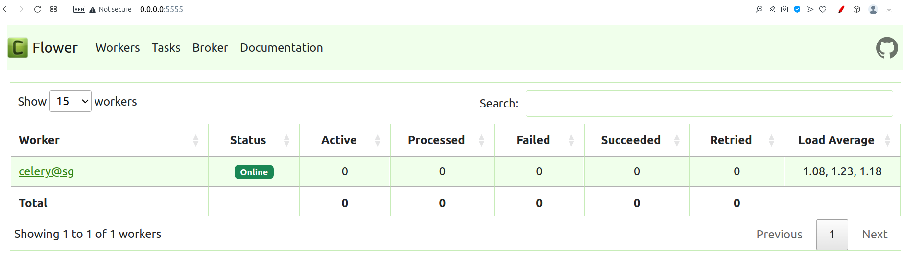

Celery
Celery is an open-source distributed task queue system written in Python, designed to manage the execution of tasks asynchronously across multiple workers.
Info!
Celery is written in Python, but the protocol can be implemented in any language.
It operates on a producer-consumer model, where tasks are defined as units of work and are placed into a queue. These tasks are then picked up and processed by worker processes, which constantly monitor the task queue for new jobs.
Celery uses a messaging broker, such as RabbitMQ or Redis, to facilitate communication between the client that initiates the task and the worker that executes it. This system allows for high availability and horizontal scaling, making it possible to distribute work efficiently across different threads or machines.
Celery’s protocol can be implemented in various programming languages, enabling language interoperability and integration with diverse systems. For instance, Node.js and PHP have their own implementations, and HTTP endpoints can be used to connect Celery tasks with external services, further extending its versatility.
To practice, let's redo our first exercise and understand what we get new with the use of Celery.
Install
Install Celery with:
Create App
Let's create a simple application to consume the messages. It will simply display the message on standard output.
Question! 1
Question! 2
Celery Task!
Notice that the predict function is annotated as a Celery task.
This task should be called every time a prediction is needed.
Run App
To initialize the application, use:
Question! 3
Send Message
To send messages for prediction (simulation), let's create a file and call the Celery prediction task.
Question! 4
Question! 5
Celery Dashboard - Flower
Celery provides a Dashboard through which we can monitor the status of workers and the work queue. This functionality can be added by installing Flower:
Install it, then initialize Flower with:
Access http://0.0.0.0:5555 and browse the available options in the menu.

Horizontal Scaling
Let's check out the horizontal scaling functionality. To do this, we will change the prediction code to simulate a long task.
Question! 6
Let's initialize the application with a limit of up to 10 workers. If Celery identifies the need for more workers, they will be created automatically.
Question! 7
Question! 8
Extra
Question! 9
Question! 10